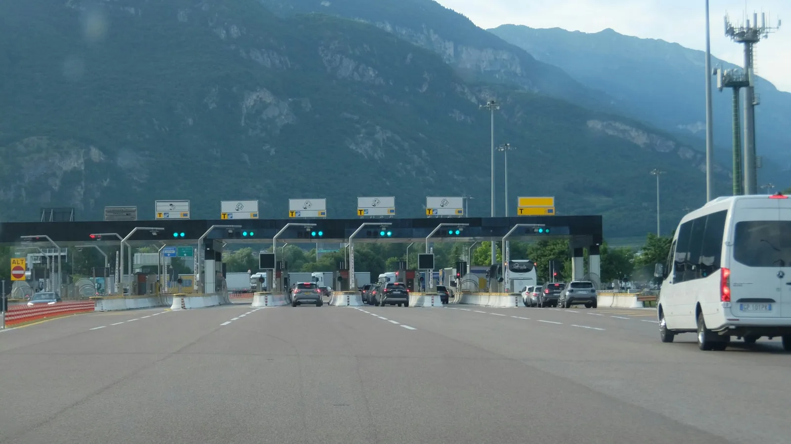

In breve
Quasi tutte le autostrade italiane (cartelli verdi, lettera A + numero) sono a pagamento. Prendi il biglietto quando entri e paghi quando esci, con carta o contanti. Evita le corsie gialle Telepass se l'auto non ha l'apparecchio, conserva bene il biglietto e calcola circa 7–8 € ogni 100 km con un'auto normale.
Come funziona il casello
- All'ingresso fermati in una corsia con il simbolo del biglietto e premi il pulsante rosso: esce il biglietto e si alza la sbarra.
- Conserva il biglietto in un posto sicuro, non sul cruscotto al sole. Se lo perdi può esserti addebitato il percorso dal casello più lontano.
- All'uscita inserisci il biglietto, paga l'importo che compare sullo schermo e la sbarra si alza. Il pedaggio dipende dai chilometri percorsi.
Alcuni tratti funzionano diversamente: certe tangenziali e tratti brevi hanno un pedaggio fisso pagato a una barriera lungo la strada, e alcuni tratti nuovi sono "free flow", cioè senza caselli: le telecamere leggono la targa e si paga online dopo. I cartelli prima del tratto indicano il sistema.
Quale corsia scegliere all'uscita
| Cartello sopra la corsia | Chi può usarla | Per chi viaggia |
|---|---|---|
| Bianco con la mano / simbolo contanti | Tutti: contanti e di solito anche carte | ✅ La scelta più sicura |
| Blu "Carte" | Solo carte di credito, debito e Viacard, niente contanti | ✅ Va bene se la carta funziona |
| Giallo "Telepass" | Solo auto con Telepass (o apparecchio compatibile) | ❌ Mai senza apparecchio |
Quanto costa
Il prezzo dipende dai chilometri e dalla società che gestisce il tratto (in Italia ce ne sono diverse). Come riferimento, con un'auto normale:
| Tratta (circa) | Distanza | Pedaggio tipico |
|---|---|---|
| Roma – Firenze (A1) | ~275 km | ~20 € |
| Milano – Venezia (A4) | ~270 km | ~20 € |
| Roma – Napoli (A1) | ~225 km | ~16 € |
I prezzi esatti cambiano ogni anno: calcola il tuo percorso sul sito di Autostrade per l'Italia prima di partire. Il carburante negli autogrill costa di solito più che in città: se puoi, fai il pieno prima di entrare in autostrada.
Telepass: serve davvero?
Il Telepass è l'apparecchio che permette di passare dalle corsie gialle senza fermarsi. Per una vacanza breve non serve: pagare con la carta al casello funziona benissimo. Può convenire per un lungo viaggio on the road con tanti giorni in autostrada.
- Auto a noleggio: alcune società offrono il Telepass a pagamento giornaliero. Chiedi al banco e verifica che sia attivo prima di usare una corsia gialla.
- Offerte "paghi solo se lo usi": Telepass e altri operatori hanno formule con costo solo nei giorni di utilizzo, ma di solito serve un conto italiano o la registrazione nell'app.
- Sicilia: non tutti gli operatori coprono tutte le autostrade siciliane: controlla prima di contarci.
Se non riesci a pagare al casello
Carta rifiutata, niente contanti, biglietto perso? Capita. Premi il pulsante di assistenza e riceverai il "Rapporto di mancato pagamento" con l'importo dovuto.
- Hai 15 giorni per pagare senza costi in più: online sul sito della società autostradale, nell'app Telepass o nei punti di pagamento.
- Dopo 15 giorni si aggiungono gli oneri di accertamento e il conto può arrivare alla società di noleggio, che te lo riaddebita con una commissione.
- Nei tratti "free flow" senza caselli vale la stessa regola dei 15 giorni: si paga online con il numero di targa.
In viaggio: Tutor, autogrill ed emergenze
- Tutor: su molte autostrade il sistema misura la velocità media tra due punti. Frenare sotto la telecamera non serve.
- Aree di servizio ogni 30–50 km con carburante, bagni e bar: un caffè e un panino al banco fanno parte del viaggio.
- Guasto: fermati nella corsia d'emergenza, indossa il giubbotto catarifrangente prima di scendere e metti il triangolo. Le colonnine SOS arancioni chiamano i soccorsi, oppure chiama l'803.116 per il soccorso stradale ACI (112 per le emergenze).
- Fari accesi anche di giorno.
Prezzi e regole sono indicativi e possono cambiare: verifica sempre prima di partire.
Organizza il viaggio
Alcuni link sono affiliati: se prenoti tramite loro non paghi nulla in più e aiuti 687 a restare gratuito.
I giorni in auto, organizzati attorno al viaggio.
In 687 Italy le tappe in auto stanno insieme al resto del viaggio: Naviga apre il percorso nella tua app di mappe, Prevent ti avvisa quando il meteo cambia i piani e NOW ti suggerisce cosa fare quando arrivi.
Fonti
Verificate su questi siti ufficiali a novembre 2026. Prezzi e regole possono cambiare: controlla sempre prima di partire.